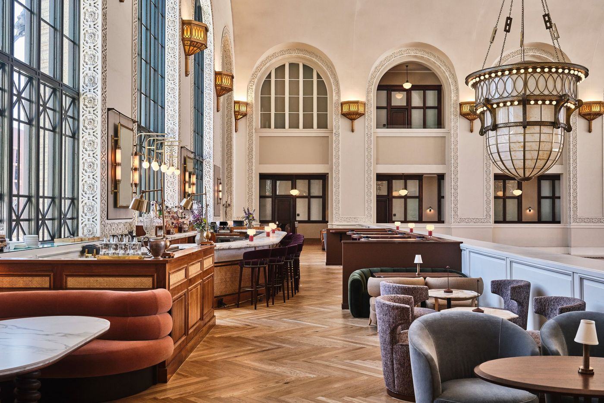

Cooper Lounge
The Cooper Lounge is on the mezzanine, one floor above the Great Hall, with about 2,100 sq ft for receptions of up to 80 guests. It has 28-foot cast-iron windows on one side and a view down into the Great Hall on the other.